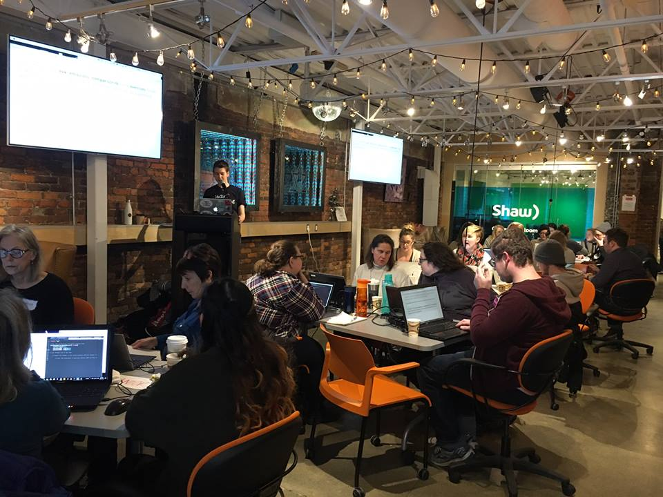
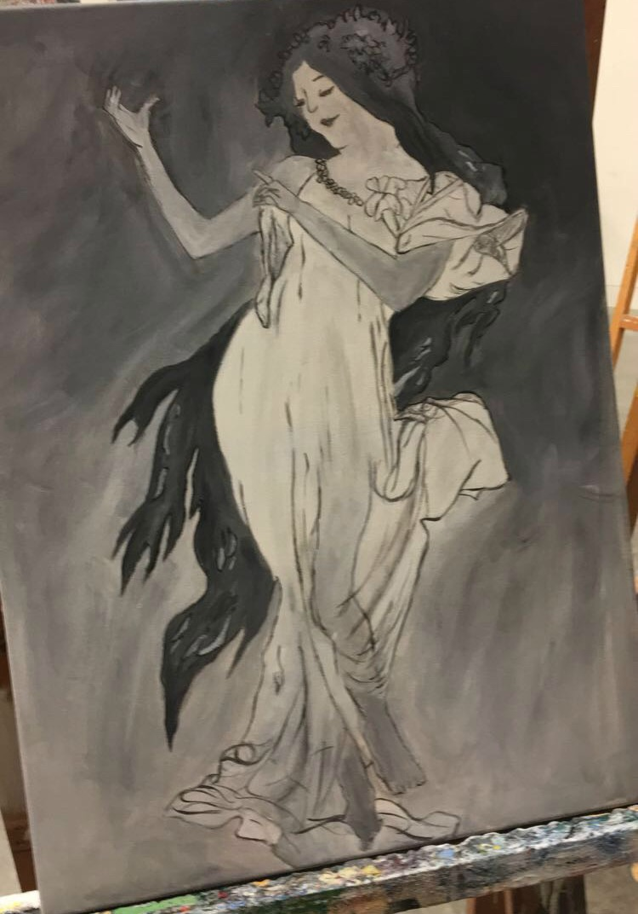
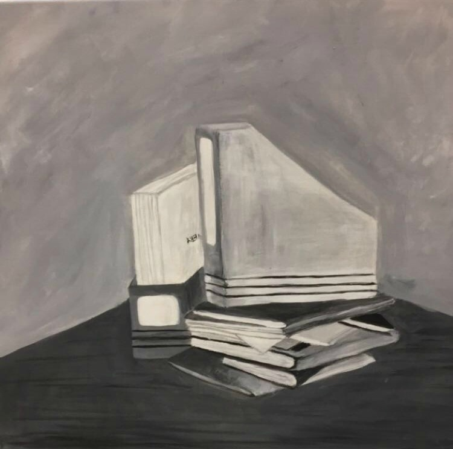

Startup Skool aims to create leaders from an early age, by exposing youth to entrepreneurship and technology. When I was younger, I attended an animatronics summer camp, and it was the first time I realized how fun tech can be. It is so important to show youth how they can use technology in their careers, and to inspire them to become leaders. I am excited to be able to work with youth to influence them to reach their full potential.
As a Computer Science student at Uvic, my courses have given me an understanding of software engineering, computer science theory, and computer hardware. I have learned how to program in many different languages, such as Java, Python, C/C++, Assembly, Ruby etc. Much of the code from my personal projects can be found on my GitHub. A lot of these projects are projects I have worked on in my free time, such as a Google Chrome extension and an iOS app. I have also participated in the programming competition BattleSnake, and the code can be found under the battlesnake-python repository. Through volunteer work, I have had the opportunity to teach others how to code. I have taught Ruby to elderly women, and Python to middle school girls.
Youth Leaders from the Ground Up
Step-Up Leadership Crew
Uvic Women in Engineering and Computer Science
Ladies Learning Code
|  |
|  |
|  |
A sample of a song I wrote in high school